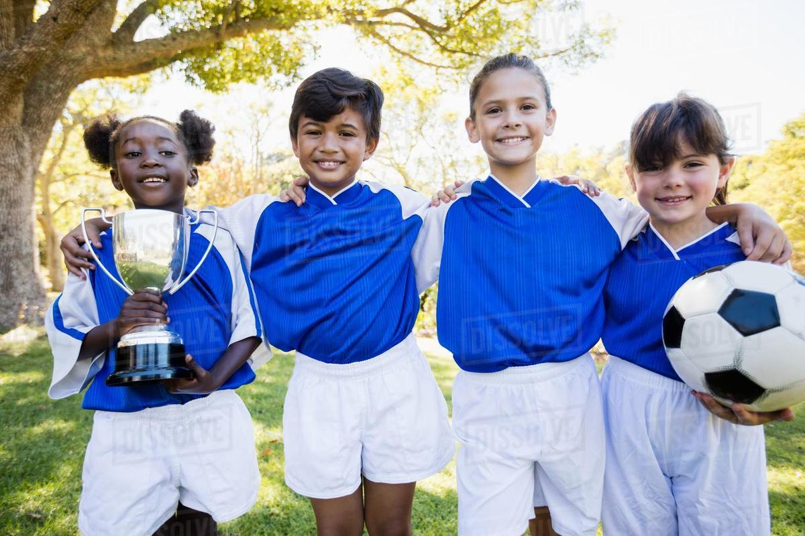
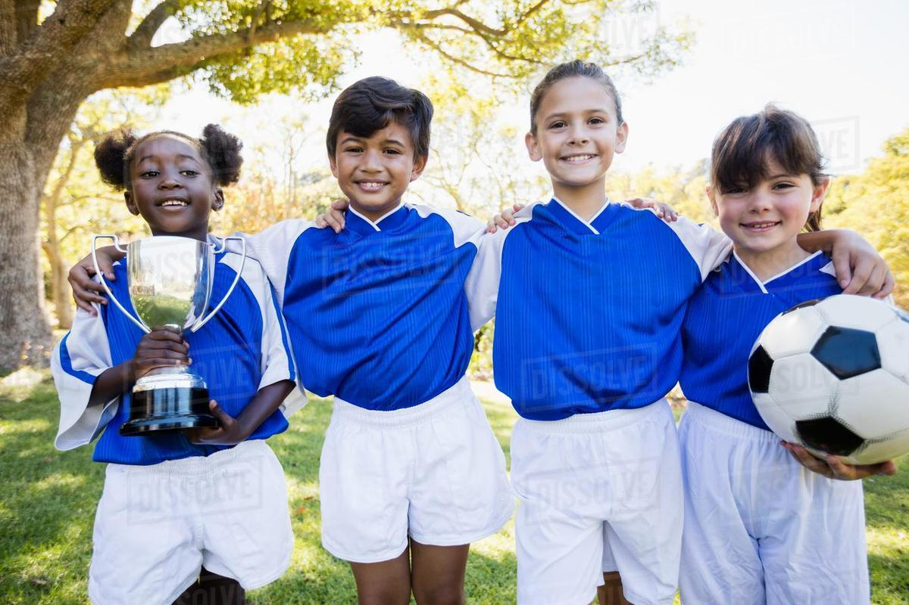
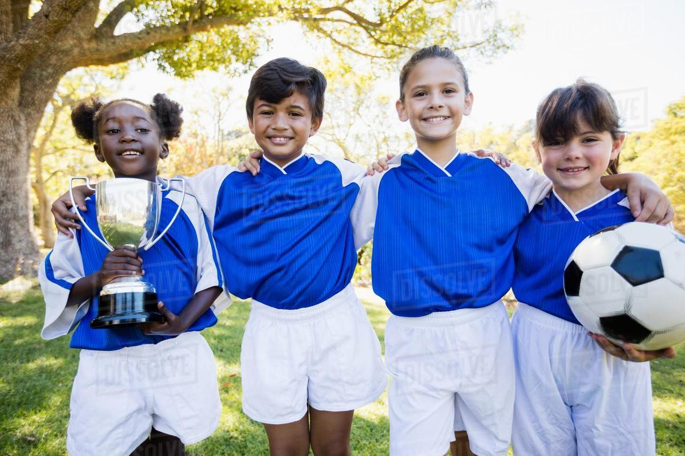
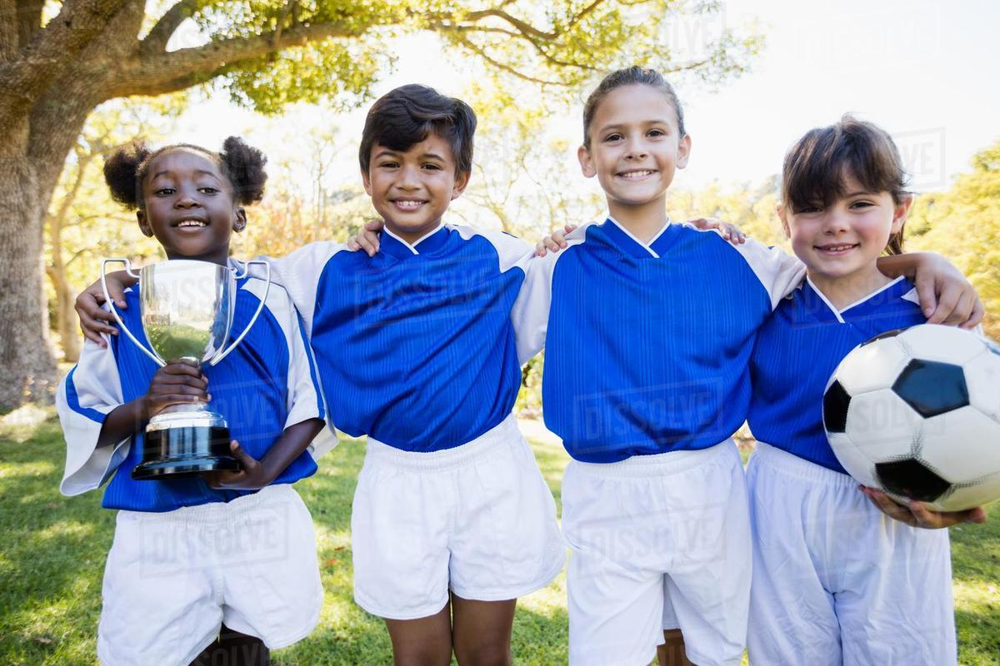

To support young athletes living in Chicago's northside neighborhoods, who have an
interest in learning and playing soccer, with opportunities to learn and practice skills
related to the game of soccer especially those skills relates to team cooperation and
good sportsmanship.
The Northside Youth Soccer League aspires to develop strong, well-rounded, and
mindful athletes through the building of character, self-discipline, and leadership.
The Northside Youth Soccer League was established in 1996 to provide athletes
residing in Chicago's northside neighborhood an environment to learn and play soccer.
To be a member of NYSL, you must be between the ages of 4-12 and reside in a
Chicago northside neighborhood. NYSL is run by a small, full-time staff, and relies on
the genrous volunteer time of parents and former league members.